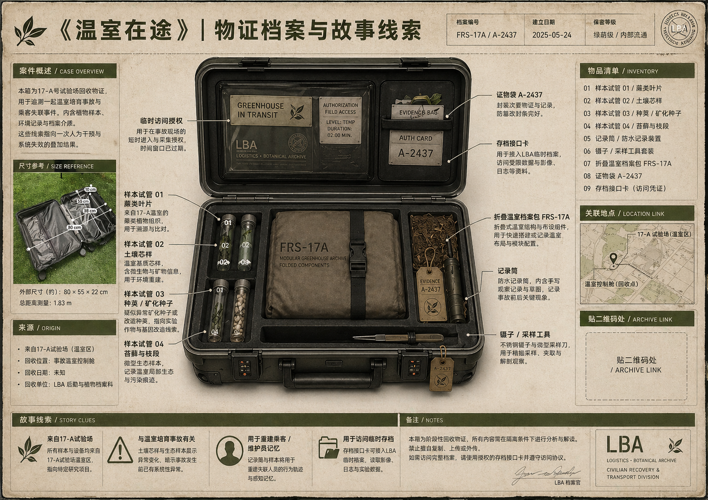

Anomaly Intake / Field Return Record
《温室在途》 / MG-17 便携温室容器异常登记
FRS-17A / A-2437
Cold Scan Route
Cold Scan Route
First phone screen
你拾获的是一件未完成返航的便携温室容器。
先确认这是一件已经在场的物，再去理解它为何停在这里：它本应随一条温室转运链返航，却在中途被留在现实。
建议顺序：先看实物箱体，再看这一页，再继续到头显时刻。更深的档案留到最后，不要先跳进长文设定。

为什么它先成立
这只箱体不是泛泛的“未来道具”。它已经带着编号、封签、样本、环境记录和一条被打断的回收路径来到现场。
你现在看到的是一份被保留下来的取证面。它证明这件东西原本服务于一个可折叠、可运输、可重新展开的小型温室系统。
箱体编号MG-17 / FRS-17A / A-2437
异常状态未完成返航，已进入现实回收链
最短理解先相信一件真物，再进入一次短暂空间展开
查验顺序
01
看箱体先确认编号、封签和内部组件都在同一个物件系统里。
02
看短片用一段开启片段理解这只箱体为何不是静态展示品。
03
回到实物把视线重新移回箱体边缘，再进入头显时刻。
04
进入空间如果现场提供 Vision Pro，请继续进入一次稳定的温室展开。
05
离场后再深查更深的档案和词条留到最后，不抢首屏。
开启片段
这段片子只负责过桥：它让箱体从“被看见的物件”进入“即将展开的空间”。如果现场头显路线已准备好，看完就可以抬头回到箱体。